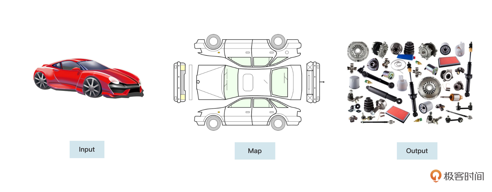
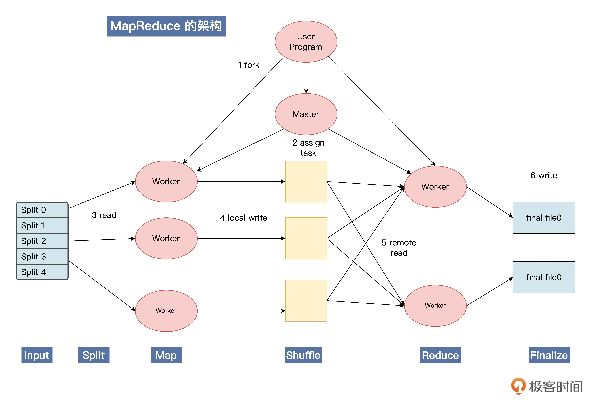

- 00 开篇词 练好基本功，优秀工程师成长第一步.md
- 01 CISC & RISC：从何而来，何至于此.md
- 02 RISC特性与发展：RISC-V凭什么成为“半导体行业的Linux”？.md
- 03 硬件语言筑基（一）：从硬件语言开启手写CPU之旅.md
- 04 硬件语言筑基（二）_ 代码是怎么生成具体电路的？.md
- 05 指令架构：RISC-V在CPU设计上到底有哪些优势？.md
- 06 手写CPU（一）：迷你CPU架构设计与取指令实现.md
- 07 手写CPU（二）：如何实现指令译码模块？.md
- 08 手写CPU（三）：如何实现指令执行模块？.md
- 09 手写CPU（四）：如何实现CPU流水线的访存阶段？.md
- 10 手写CPU（五）：CPU流水线的写回模块如何实现？.md
- 11 手写CPU（六）：如何让我们的CPU跑起来？.md
- 12 QEMU：支持RISC-V的QEMU如何构建？.md
- 13 小试牛刀：跑通RISC-V平台的Hello World程序.md
- 14 走进C语言：高级语言怎样抽象执行逻辑？.md
- 15 C与汇编：揭秘C语言编译器的“搬砖”日常.md
- 16 RISC-V指令精讲（一）：算术指令实现与调试.md
- 17 RISC-V指令精讲（二）：算术指令实现与调试.md
- 18 RISC-V指令精讲（三）：跳转指令实现与调试.md
- 19 RISC-V指令精讲（四）：跳转指令实现与调试.md
- 20 RISC-V指令精讲（五）：原子指令实现与调试.md
- 21 RISC-V指令精讲（六）：加载指令实现与调试.md
- 22 RISC-V指令精讲（七）：访存指令实现与调试.md
- 23 内存地址空间：程序中地址的三种产生方式.md
- 24 虚实结合：虚拟内存和物理内存.md
- 25 堆&栈：堆与栈的区别和应用.md
- 26 延迟分配：提高内存利用率的三种机制.md
- 27 应用内存管理：Linux的应用与内存管理.md
- 28 进程调度：应用为什么能并行执行？.md
- 29 应用间通信（一）：详解Linux进程IPC.md
- 30 应用间通信（二）：详解Linux进程IPC.md
- 31 外设通信：IO Cache与IO调度.md
- 32 IO管理：Linux如何管理多个外设？.md
- 33 lotop与lostat命令：聊聊命令背后的故事与工作原理.md
- 34 文件仓库：初识文件与文件系统.md
- 35 Linux文件系统（一）：Linux如何存放文件？.md
- 36 Linux文件系统（二）：Linux如何存放文件？.md
- 37 浏览器原理（一）：浏览器为什么要用多进程模型？.md
- 38 浏览器原理（二）：浏览器进程通信与网络渲染详解.md
- 39 源码解读：V8 执行 JS 代码的全过程.md
- 40 内功心法（一）：内核和后端通用的设计思想有哪些？.md
- 41 内功心法（二）：内核和后端通用的设计思想有哪些？.md
- 42 性能调优：性能调优工具eBPF和调优方法.md
- 先睹为快：迷你CPU项目效果演示.md
- 加餐01 云计算基础：自己动手搭建一款IAAS虚拟化平台.md
- 加餐02 学习攻略（一）：大数据&云计算，究竟怎么学？.md
- 加餐03 学习攻略（二）：大数据&云计算，究竟怎么学？.md
- 加餐04 谈谈容器云与和CaaS平台.md
- 加餐05 分布式微服务与智能SaaS.md
- 国庆策划01 知识挑战赛：检验一下学习成果吧！.md
- 国庆策划02 来自课代表的学习锦囊.md
- 国庆策划03 揭秘代码优化操作和栈保护机制.md
- 温故知新 思考题参考答案（一）.md
- 用户故事 我是怎样学习Verilog的？.md
- 结束语 心若有所向往，何惧道阻且长.md
加餐02 学习攻略（一）：大数据&云计算，究竟怎么学？
你好，我是LMOS。
上节课，我带你了解了云计算中IAAS层的技术。结合云计算的分层架构，下面一层就是PaaS，PaaS与IaaS相似，区别在于云服务提供商还提供了操作系统和数据库。
这节课，我们就一起了解一下云计算PaaS层的大数据体系吧。什么是大数据呢？其实这是早在1980年出版的图书《第三次浪潮》里就预见到的一种场景，而具体到工程落地层面，就不得不提到Google的“三驾马车”。
今天这节课，我想从需求角度，和你讨论一下在工程上为什么要这样设计。
GFS的核心问题
我们先从谷歌文件系统GFS开始说起。
顾名思义，这个系统是用来储存文件的。你可能觉得，存文件听起来好像不难呀？
我们可以仔细思考一下，存文件会有什么难度呢？先让我们停下手头的工作，看看自己电脑上的硬盘空间还有多大，500G还是1TB、5TB？
没错，空间容量就是我们遇到的第一个门槛，单台电脑的存储空间确实不是无限大的。
接下来，我们找出一份大一点的文件，把它复制到另一个目录，看看复制速度如何？这里就碰到了第二个问题——文件写入速度。一般来说，机械盘硬盘的最高写入速度是200MB/s左右，而固态硬盘的写入速度是3000MB/s左右。
试想一下，如果我们有1TB的数据写入硬盘（就算真的有一块1TB空间的固态硬盘可以使用）那我们也至少需要4天时间，数据才能完全写入完毕。
还有一个生活中常见的问题，你遇到过电脑故障、死机或者硬盘坏掉的情况么？是的，在普通PC机器运行的过程中，故障其实是常态。你平常用家里的网络打网游时遇到过丢包、掉线、卡顿之类的情况么？没错，网络故障确实也是我们要考虑的问题。
那么到底怎样才能设计一套文件系统，同时满足以下条件呢：
- 容量“无限”大；
- 对大容量的数据读写性能高；
- 遇到软硬件问题时，系统可靠性也很高。
这里就要用到问题切分和并行化的思想了，这些我们在[第四十节课]也讲过。
比如想要解决文件比较大的问题，就我们可以考虑把它切分成很多份。切分完了之后，我们还得想到鸡蛋（文件）放在一个篮子里，遇到故障“全军覆没”的风险。为此，咱们就得多搞几台机器，多存几份呗。
还担心存的比较慢？那我们就把多个文件并行存储到不同的硬盘上，这样就不会受到磁盘写入速度的限制了。
说到这里，你现在是不是已经跃跃欲试，想要开始实现一套分布式文件系统啦？别着急，让我们先把刚刚讨论到的设计思路梳理一下：
首先，为了不给使用者应用程序增加太多负担，我们还是希望用户能像以前单机读写文件一样通过简单的API就能完成文件读写。这时候，我们就需要抽象出一套统一的客户端client，提供给用户使用。
其次，是切分成很多份文件。GFS会把每一份文件叫做一个chunk，这个chunk大小的默认值是64MB，这比操作系统上的文件系统要大一些，这么做为了减少GFS client和GFS master的交互次数、提升文件读取性能。同时，为了保障可靠性，GFS还会为每个chunk保留三个副本。
但是这里还有个问题没解决，文件都切成很多份存到很多机器上了，我们怎么知道哪一个chunk存到哪里去了呢？这时候，我们就需要把这种chunk分片文件映射到存储位置、原始文件名、权限之类的关联关系抽象出来，我们把这类用来找数据的数据叫做元数据信息。
那么元数据存在哪里好一点？
聪明的你可能已经想到了，我们可以给这些服务器分一下类，让老大master带着小弟chunkserver来干活儿，元数据比较重要，所以咱们就交给老大来保管。有了这些思路，相信你再看 GFS论文中的架构图时，就会感觉清晰很多。

MapReduce的分分合合
接下来，我们再说说MapReduce。
我们首先要搞清楚MapReduce是什么，当看到MapReduce时，你可能感觉它是一个概念，但其实不然，MapReduce应该是Map、Reduce，是两个概念，即映射和归约。
用软件实现这两个概念，就会形成Map、Reduce两个操作，落实到代码中可能是两个接口函数、或者库，又或者是进程。我们可以把这些东西，理解成一套编程模型。
那么什么是Map呢？Map字面意思为映射，但本质是拆分。
接下来，我们以汽车为例，看一下我们把一辆完好的汽车执行Map操作之后的状态，如下图所示：

从上图可以看出，执行map操作时，汽车首先作为输入，然后标记出汽车的各种零部件，最后汽车被拆分成各种零件。
现在。让我们切换一下视角，把这辆汽车转换成用户的大规模数据，于是就变成了对一个大数据进行标记，然后拆分成许多小数据的过程，这就是MapReduce中的Map操作。
什么又是Reduce呢？Reduce的字面意思为归约，是Map操作是逆向操作，其本质是合并。同样地，我们以汽车为例，看看一辆被Map操作的汽车，在Reduce的操作下，会变成什么样子。如下图所示：

我们可以看到，执行Reduce操作时，是之前把Map汽车产生的各个零件作为输入，然后进行各种零部件的组装，最后合并生成汽车，或者是更高级的类汽车产品。
同样地，把这辆汽车各种零部件换成用户Map后的各种小数据，就相当于合并许多个小数据，然后生成原来的大数据或者对数据进行更高级的处理，这就是MapReduce中Reduce操作的作用。
我们刚刚把一台车子进行了一大波MapReduce操作，这台车子就变成了变形金刚了，哈哈。 举个例子，理解了MapReduce的原理之后，我们再来看一下它的六大步骤。
如果你是家大型汽车生产厂家， 你拥有许多不同类型的汽车设计方案（Input），还拥有许多汽车零件供应商，不同的汽车零件供应商会主动挑选不同的汽车零件（Split），挑选好之后你就把汽车生产方案进行拆解（Map）。
之后，再把不同的零件下发到不同供应商的生产车间生产（Shuffle），最后要能根据不同的顾客需求，取用不同的零件拼装成最终的汽车，这就是Reduce。拼装好汽车之后，会放到售卖部那边等待客户取货（Ticket），这个过程是Finalize。
所以MapReduce是六大过程，简单来说，就是 Input、Split、Map、Shuffle、Reduce和 Finalize。那么这六大步骤又是怎样被一套框架管理起来的呢？答案其实还是老大（Master）带着小弟（Worker）干活。
下面，我们结合MapReduce的架构图，分析一下它的工作原理。

我们的用户程序要想使用MapReduce，必须要链接MapReduce库。有了MapReduce库就可以进行Map、Reduce操作了。
用户程序运行后先声明数据有多少，然后需要将它们拆分成一些Mapper和Reducer来执行。假如把数据分成n份，那就要找n个Mapper来处理。这时会产生许多Worker，这些Worker有的是执行Map操作的，有的 Worker是执行Reduce操作的。
最重要的是还会产生一个 Master Worker，它与其他Worker的等级是相同的，它会调度其它Worker运行，并作为用户的代理来协调整个过程，让用户可以做其他事情。
Master Worker会让一个Worker去处理0号数据，另一个Worker负责处理1号数据等等，这就是分配数据的过程。每个Worker都会在本地处理数据，并把结果写入缓存或硬盘。当执行Map操作的 Worker完成任务后，Master Worker会让执行Reduce操作的Worker去获取数据。
他们会从各个Worker那里获取需要的数据，并在本地完成Reduce操作，最后将结果写入最终的文件中，这就是Finalize。这个过程其实就是前面说过的六个步骤。
BigTable
最后一驾马车就是BigTable。在说它之前，我们先聊聊表。
请和我一起思考一下，什么是表呢？为了更好理解，我们可以抄出Excel这个神器，来仔细认识一下表的基本构成：

不难发现，表是由一个又一个的格子构成的，而每一个格子里的内容，又能通过行和列的坐标定位到。
这时候我们不妨联想一下，是不是我们只需要存储足够多的格子，就可以存储各种各样的表啦。那么光有行、列和格子里内容就足够了么？
并非如此，别忘了格子里的内容还有可能会修改。比如上图中的B1单元格里的Linux版本需要从1.0.5更新到1.0.6，因此还需要记录格子的时间。
没错，BigTable其实也是这样的思路，BigTable把每个格子的数据都抽象成了Key Value的键值对的格式。其中，key是由行（row:string）、列（column:string）、时间戳（time:int64）这三部分构成的，而Value则是用string来存储的。
这样的Key Value数据结构有没有让你联想到什么？其实它就类似于我们数据结构中常用的HashMap。但这个HashMap有点特殊，因为它还要支持后面这几种功能：
- 给定几个key，能够快速返回小于或者等于某个key的那个数据。
- 给定key1和key2，可以返回key3值中最高的数据。
- key也可以只给前缀格式prefix，返回所有符合前缀的值。
- 这个“HashMap”在读、写性能上，都要相对比较好。
- 这个“HashMap”要能持久化，因为数据不能丢。
有了上述功能的约束，你是不是感觉一时半会儿还真没想出来，要怎么设计这个数据结构？
其实Google已经把这个数据结构设计好了，这个数据结构叫做SSTable，具体实现确实有些复杂，但好在有官方开源的单机实现——LevelDB。后面还有基于LevelDB演进升级的RocksDB，也是一个不错的项目，感兴趣的话可以自行了解。
现在，我们有了把表化简成小格子，再把每个格子使用Key Value结构存储到了单机的“HashMap”数据结构上。接下来，我们还得想清楚，如何让单机的“HashMap”数据结构变成可以分布式运算的。
这时候，我们就可以把前面这个思路做进一步抽象，你可以结合后面的示意图看一下，具体是抽象成了三层：

首先，对于每个表，我们都需要保存这个表的元数据。
其次如果随着数据增长，表变得比较大了，我们需要具备自动切分这张表的能力。切分表的最小单位我们叫做Tablet，也就是说，一张表会对应一个或多个Tablet。
具体到每一个Tablet，我们是基于一个或多个单机的“HashMap”数据结构，也就是SSTable来实现的；而每一个SSTable中存储的，又是一堆用Key Value格式表示的单元格。
对应到服务上，我们又可以套用前面讲的老大带小弟干活（主从架构）的思路，把一个或者多个Tablet交给Tablet Server这一类小弟（服务）来干活儿。而老大（Master）主要负责为Tablet服务器分配Tablets、检测新加入的或者过期失效的Tablet服务器、对Tablet服务器进行负载均衡、对保存在GFS上的文件做垃圾收集、处理和模式相关的修改操作（比如建立表和列族）。
理清了思路，你再来看看后面这张架构图，是不是就很容易理解了呢？

小结
今天，我们主要了解了现代云计算PAAS层中，大数据体系的由来。其中最核心的就是谷歌的三驾马车，即谷歌文件系统GFS、面向大型集群的简化数据处理MapReduce、BigtTable结构化数据的分布式存储系统。
GFS（Google文件系统）是一种分布式文件系统，它为Google的大型数据处理应用提供了数据存储和访问功能；MapReduce是一种编程模型，它允许开发人员更方便地处理大量数据；而BigTable是一种高性能的分布式存储系统，它可以处理海量的结构化数据。
如果学过今天内容，你还觉得意犹未尽，想要更深入地学习这三种技术，建议阅读谷歌相关的论文和文档，并尝试去做一下mit 6.824分布式系统课程提供的课后练习。
思考题
推荐你在课后能搜索GFS、MapReduce、BigTable这三篇原始论文阅读一下，结合今天学到的设计过程的思路，进一步思考这么设计的优点和缺点分别是什么，还有什么改进空间？
欢迎你在评论区和我交流讨论，如果觉得这节课内容还不错，也可以转发给你的朋友，一起学习进步。
© 2019 - 2023 Liangliang Lee. Powered by Vert.x and hexo-theme-book.